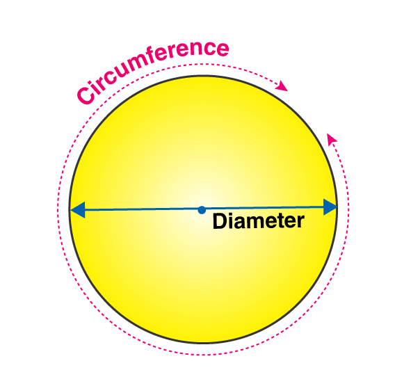
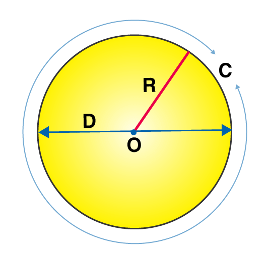

CIRCUMFERECE OF A CIRCLE
In Mathematics, the circumference of any shape defines the path or the boundary that surrounds the shape. In other words, the circumference is also called the perimeter, which helps to identify the length of the outline of any shape. As we know, the perimeter and area of circle are the two important parameters of a circle. In this article, we will discuss the “Circumference of a circle” or “Perimeter of circle” with its definition, formula, methods to find the circle’s circumference with many solved examples. Table of Contents:
Circle’s CircumferenceCircumference of the circle or perimeter of the circle is the measurement of the boundary of the circle. Whereas the area of circle defines the region occupied by it. If we open a circle and make a straight line out of it, then its length is the circumference. It is usually measured in units, such as cm or unit m. When we use the formula to calculate the circumference of the circle, then the radius of the circle is taken into account. Hence, we need to know the value of the radius or the diameter to evaluate the perimeter of the circle. 
Circumference of a Circle FormulaThe Circumference (or) perimeter of circle = 2πR where, R is the radius of the circle π is the mathematical constant with an approximate (up to two decimal points) value of 3.14 Again, Pi (π) is a special mathematical constant; it is the ratio of circumference to diameter of any circle. where C = π D C is the circumference of the circle D is the diameter of the circle For example: If the radius of the circle is 4cm then find its circumference. Given: Radius = 4cm Circumference = 2πr = 2 x 3.14 x 4 = 25.12 cm
Area of a Circle FormulaArea of any circle is the region enclosed by the circle itself or the space covered by the circle. The formula to find the area of the circle is; A = πr2 Where r is the radius of the circle, this formula is applicable to all the circles with different radii. |
|---|
| Circumference of Circle | 2πr |
| Area of circle | πr2 |
| Perimeter of semi-circle | πr + 2r |
| Area of semi-circle | πr²/2 |
Radius of a Circle
The distance from the centre to the outer line of the circle is called a radius. It is the most important quantity of the circle based on which formulas for the area and circumference of the circle are derived. Twice the radius of a circle is called the diameter of the circle. The diameter cuts the circle into two equal parts, which is called a semi-circle.
What is the Circumference of Circle?
The meaning of circumference is the distance around a circle or any curved geometrical shape. It is the one-dimensional linear measurement of the boundary across any two-dimensional circular surface. It follows the same principle behind finding the perimeter of any polygon, which is why calculating the circumference of a circle is also known as the perimeter of a circle.
A circle is defined as a shape with all the points are equidistant from a point at the centre. The circle depicted below has its centre lies at point A.
The value of pi is approximately 3.1415926535897… and we use a Greek letter π (pronounced as Pi) to describe this number. The value π is a non-terminating value.
For circle A (as given below), the circumference and the diameter will be-

In other words, the distance surrounding a circle is known as the circumference of the circle. The diameter is the distance across a circle through the centre, and it touches the two points of the circle perimeter. π shows the ratio of the perimeter of a circle to the diameter. Therefore, when you divide the circumference by the diameter for any circle, you obtain a value close enough to π. This relationship can be explained by the formula mentioned below.
C/d = π
Where C indicates circumference and d indicates diameter. A different way to put up this formula is C = π × d. This formula is mostly used when the diameter is mentioned, and the perimeter of a circle needs to be calculated.
Circumference to Diameter
We know that the diameter of a circle is twice the radius. The proportion between the circumference of a circle and its diameter is equal to the value of Pi(π). Hence, we say that this proportion is the definition of the constant π.
(i.e) C= 2πr
C= πd (As, d = 2r)
If we divide both sides by the diameter of the circle, we will get the value that is approximately close to the value of π.
Thus, C/d = π.
How to Find Circumference?
Method 1: Since it is a curved surface, we can’t physically measure the length of a circle using a scale or ruler. But this can be done for polygons like squares, triangles and rectangles. Instead, we can measure the circumference of a circle using a thread. Trace the path of the circle using the thread and mark the points on the thread. This length can be measured using a normal ruler.
Method 2: An accurate way of knowing the circumference of a circle is to calculate it. For this, the radius of the circle has to be known. The radius of a circle is the distance from the centre of the circle and any point on the circle itself. The figure below shows a circle with radius R and centre O. The diameter is twice the radius of the circle.

Solved Examples on Perimeter of Circle
Example 1:
What is the circumference of the circle with diameter 4 cm?
Solution:
Since the diameter is known to us, we can calculate the radius of the circle,
Therefore, Circumference of the Circle = 2 x 3.14 x 2 = 12.56 cm.
Example 2:
Find the radius of the circle having C = 50 cm.
Solution:
Circumference = 50 cm
As per formula, C = 2 π r
This implies, 50 = 2 π r
50/2 = 2 π r/2
25 = π r
or r = 25/π
Therefore, the radius of the circle is 25/π cm.
Example 3:
Find the perimeter of circle whose radius is 3 cm?
Solution:
Given: Radius = 3 cm.
We know that the circumference or the perimeter of a circle is 2πr units.
Now, substitute the radius value in the formula, we get
C = (2)(22/7)(3) cm
C = 18.857 cm
Therefore, the circumference of circle is 18.857 cm.
Example 4:
Calculate the perimeter of circle in terms of π, whose diameter is 10m.
Solution:
Given: Diameter = 10m.
Hence, radius = diameter/2 = 10/2 = 5 m.
We know that, perimeter of circle = 2πr units
C = 2π(5) = 10π m.
Therefore, the perimeter of circle in terms of π, whose diameter 10 cm is 10π m.
Example 5:
Find the perimeter and area of circle whose radius is 5 cm. [Note: π = 3.14]
Solution:
To find: Perimeter and area of circle.
Given that, Radius, r = 5 cm and π = 3.14
As we know, the circumference (or) perimeter of a circle = 2πr units
The area of a circle = πr² square units.
Now, substitute the values in the perimeter and area of circle formula, we get
The area of circle = πr²= 3.14(5)2
A = 3.14(25)
A = 78.5 cm2
The circumference of a circle = 2πr = 2(3.14)(5)
Circumference = 3.14(10) = 31.4 cm.
Hence, the perimeter and area of circle are 31.4 cm and 78.5 cm2 respectively.
Practice/ Try Questions
- Calculate the perimeter of circle whose diameter is 8 cm.
- What will be the diameter of a circle if it’s C = 10 cm?
- If C = 12 cm, what will be its radius?
- What is the circumference of a 16-inch circle?
- What is the circumference of a 6 mm circle?
Frequently Asked Questions on Circumference of a Circle
What is the Circumference of a Circle?
The circumference of a circle is defined as the linear distance around it. In other words, if a circle is opened to form a straight line, then the length of that line will be the circle’s circumference.
How to Calculate the Circumference of a Circle?
To calculate the circumference of a circle, multiply the diameter of the circle with π (pi). The circumference can also be calculated by multiplying 2×radius with pi (π=3.14).
How to Calculate Diameter from Circumference?
The formula for circumference = diameter × π
Or, diameter = circumference/π
So, the diameter of the circle in terms of circumference will be equal to the ratio of the circumference of the circle and pi.
What is the Circumference of a Circle with Radius 24 inches?
Circumference = 2×π×r
C = 2×3.14×24
C = 150.72 inches
What are the steps involved in finding the circumference of a circle if its area is given?
Step 1: Find the radius using the area of the circle formula (A = πr2).
Step 2: Now, substitute the radius value in the circumference formula (C = 2πr) to get the answer.
Which formula is used to find the perimeter of a circle, when its area is given?
If the area of a circle is given, then the formula to calculate the perimeter or a circumference of a circle is given by: C = 2√(πA) units.
Find the circumference of a circle in terms of π, if the radius measures 3 cm.
We know that, Circumference = 2πr = 2π(3) = 6π
Therefore, the circumference of a circle is 6π cm, if its radius is 3 cm.
What is the circumference of a circle in terms of π, if its diameter is 7 cm.
As we know, Circumference of a circle if its diameter is given = π × d units.
Substituting d = 7 cm in the formula, we get
C = π × 7 = 7π units.
.jpeg)
.jpeg)